Warped · official game design deck
Warped
A team shooter across five curved-space levels. Blue and red fight level by level along a line of five worlds, and each world bends space its own way: hyperbolic ground, black holes, wormholes, a sandstorm that bends light, and a city inside a sphere.
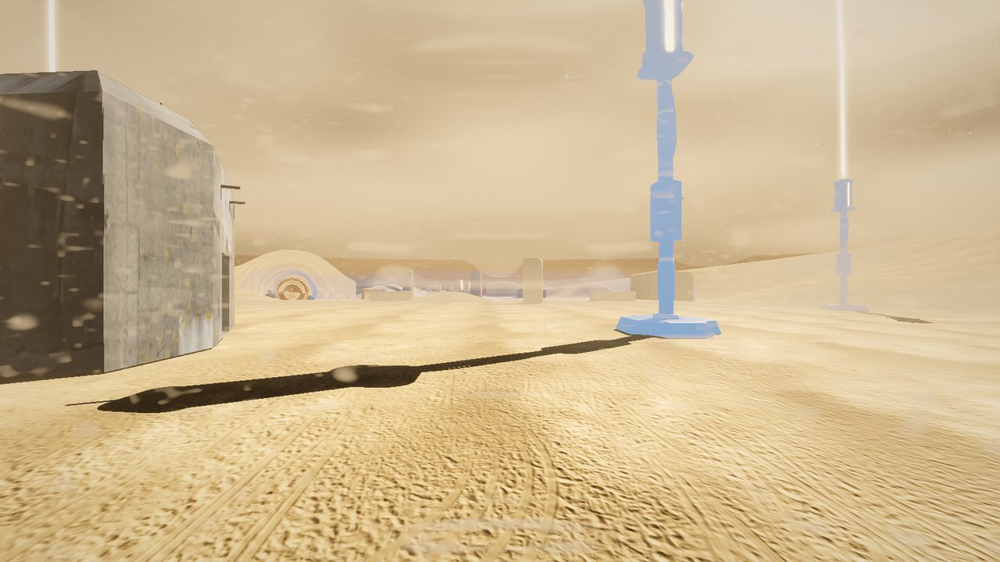
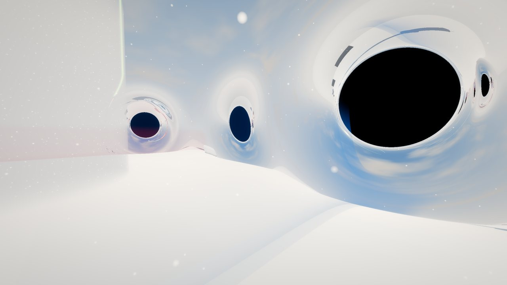
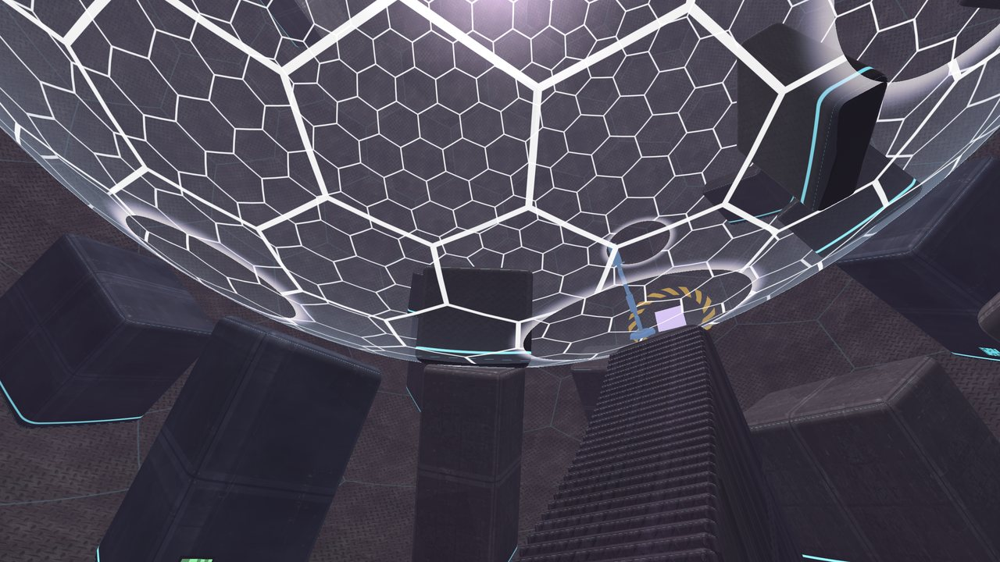
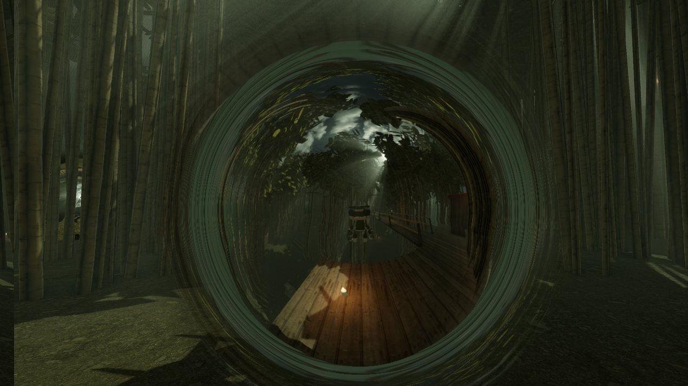
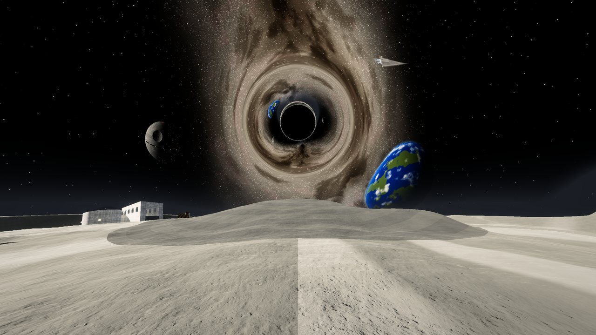
The game as built on staging/user-4gatepylon on 2026-11-08 (commit 7d614d8). Every number comes from the code and its settings files; every picture is a real frame of the game. Sources are in README.md.
Gameplay
The game in play
Recordings of the game by the user. The players need a network connection, and YouTube plays them only when the deck is served: python3 -m http.server 8137 --directory game_design/slides, then open http://localhost:8137/#2. Opened as a file, use the links.

Warped demo v0.2 · Watch on YouTube

Warped v0.3 demo · Watch on YouTube
Match
One match, five levels, two wavefronts
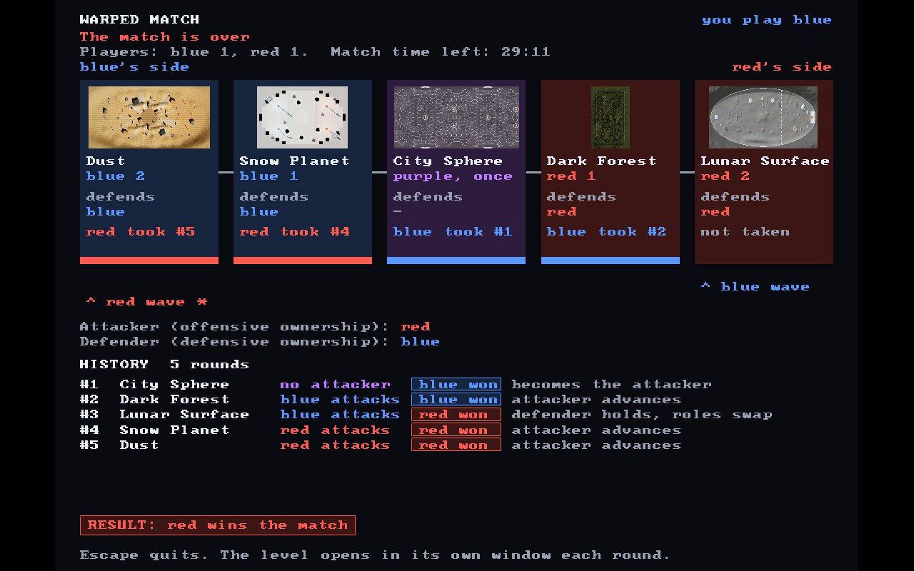
- Round 1 is City Sphere, the only level played once. Its winner becomes the attacker.
- A team's wavefront is the next level it must win on the other side. It starts at the other team's depth-1 level and only moves deeper.
- Every later round is played on the attacker's wavefront.
- Attacker wins: its wavefront moves one level deeper. Winning the defender's deepest level wins the match.
- Defender wins: the roles swap, and the new attacker plays at its own wavefront, where it left off.
- After 30 minutes without a winner the match is a tie.
A match server keeps the state and starts each round's level as its own program, 10 s after each team has a player. The level reports its winner, stays open 5 s to show the win, and the match window then shows the progression page: each level's owner, both wavefronts, the attacker, and the history of rounds.
Winning a level
Turn off every enemy pylon
- Each pylon is a 12 m sci-fi beacon with one console, the beacon itself. It beams its team colour up into the sky while on.
- Hold E for 10 s within 3 m, aiming at it. The server checks the reach and the aim (with 0.5 m of slack). You can't shoot while holding.
- Letting go or aiming away resets that console. Two players' holds don't add up.
- The console pulses once a second, faster and faster under a hold up to 8 a second just before it turns off (the frenzy), eases back over about a second if the hold stops, and goes dark when off.
- A team wins the level once every console of the other team is off: everyone sees
BLUE TEAM WINSorRED TEAM WINS.
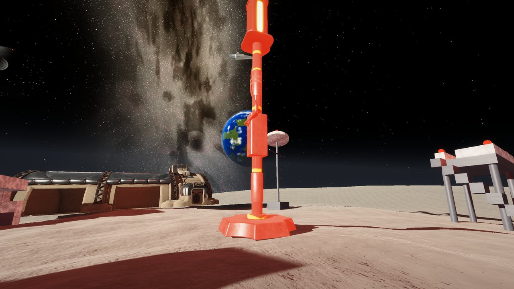
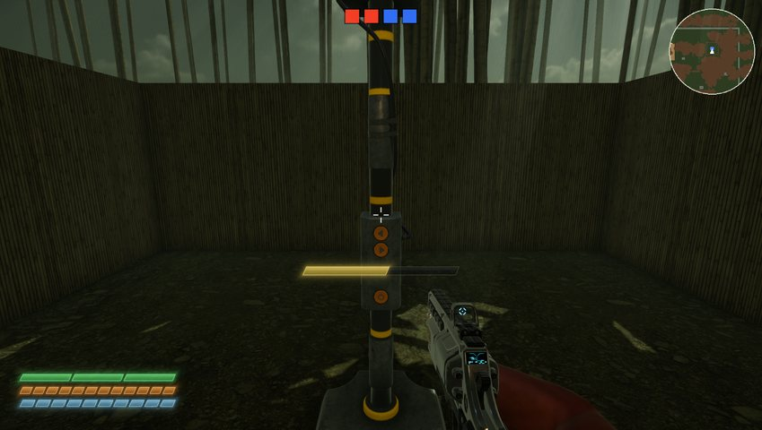
Differs: Dark Forest still has its own hold, 3 s within 2.5 m, and doesn't check reach on its server yet.
Players
Moving
- Walk
- 10 m/s (WASD)
- Sprint
- 18 m/s while Shift is held and there is energy; City Sphere 21.6 m/s
- Sprint energy
- Empties in 7.5 s of sprinting; refills in 15 s walking or standing, 7.5 s crouched
- Crouch
- Ctrl: half the walking speed, eyes at 0.6 of standing height in 0.15 s
- Jump
- Space: 1.25 m high (onto a 1 m block), 0.58 s in the air; on Lunar about 30 m/s² of gravity
- When hit
- Half speed for 1 s
- Shooting
- Only once no movement key has been held for 0.25 s: fine crouched or in the air, never while sprinting
- Head bob
- 8 cm at 2 steps/s walking, 14 cm at 2.8 steps/s sprinting; the gun sways 2 cm and 4 cm, and the long sniper swings 1.7° and 3.4°
- Third person
- V: the camera eases out over 0.3 s to 3 m behind and 0.6 m above your head, and pulls in at walls. Shots still leave your eye; aiming brings the camera back.
- Flashlight
- F held: a cone of light from your eye (others don't see it yet)
- Map edge
- No wall: on Lunar and Dust, climbing the crater wall slows you without end, never past halfway up, while the view stretches. Walking back in is at full speed.
- Warps
- Your path bends near a warp like light, so walking into a wormhole takes you through it
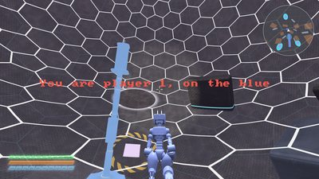
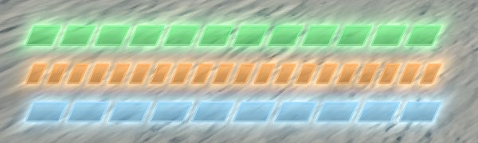
Differs: Dark Forest still moves by its own numbers (walk 4.4 m/s, sprint 7 m/s, a jump of about 0.9 m) and has ladders you climb at 3.2 m/s; it uses Lunar's sprint energy.
Weapons
Two guns, infinite ammo
Sniper · gun 1, key 1
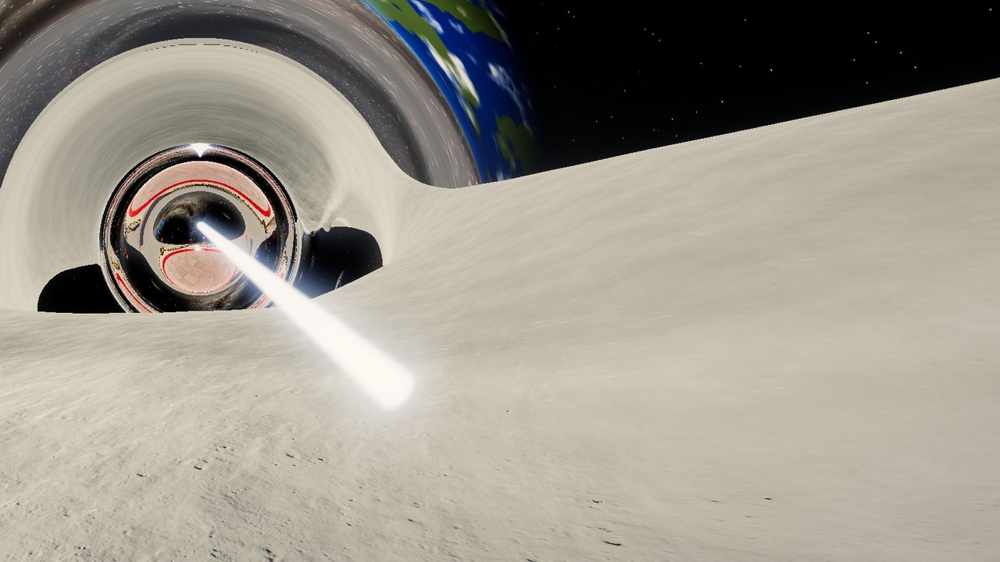
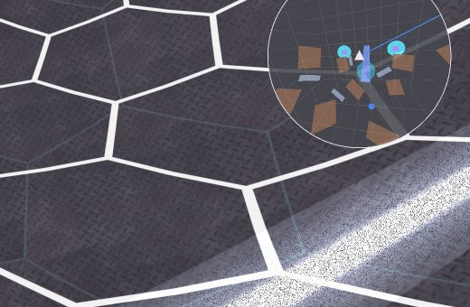
- Model
- A wooden bolt-action rifle with a scope
- Beam
- A white lightsaber blade in a pale haze
- Fire
- One shot a click; it hits for 0.25 s, then reloads 2 s (a one-block ammo bar)
- Eliminates
- 1 hit, head or body
- Strays
- 3 mrad on average, at most 15
- Aim zoom
- 2.5×, no recoil
Rifle · gun 2, key 2
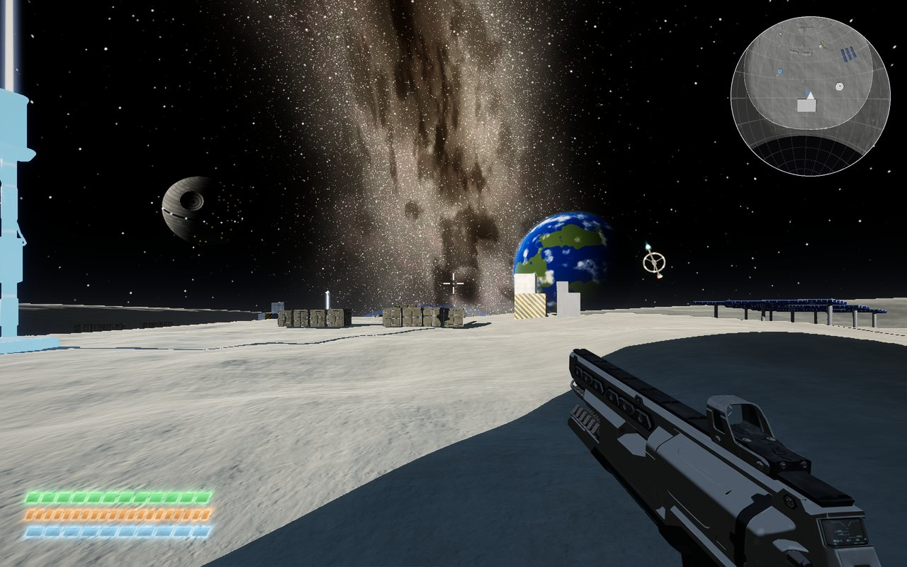
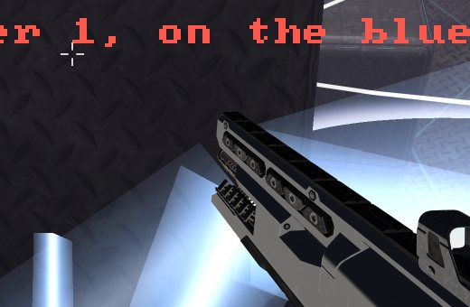
- Model
- The energy revolver
- Fire
- 8 shots/s while held, each hitting for 0.06 s
- Overheats
- After 20 shots in a row; cools fully in 2 s
- Eliminates
- 2 hits to the head (its top half-meter) or 12 to the body
- Recoil
- 7.5 mrad up and 2.5 mrad left or right, alternately, settling in 0.08 s
- Strays
- 2 mrad cold, growing with heat to 20 mrad
- Aim zoom
- 1.5×
Differs: Dark Forest still has one gun of its own: the energy revolver with a 12-shot charge, R to reload (1.3 s), and 4 hits to eliminate online.
Weapons
Shots are light
Every shot is a laser beam that every player sees, so it gives the shooter away. It flies out at 250 m/s from the gun's tip, bends near black holes and wormholes like light, and goes through wormholes.
- Speckle: each frame a share of the beam's pixels is speckled, 1 black : 1 white : 8 dropping out to show what is behind. The share is random per sniper shot (0.2 on average, at most 0.5) and grows with the rifle's heat (none cold, 0.5 at full heat).
- Trail: each point of a sniper beam fades 0.25 s after the front passes, a rifle beam's after 0.05 s.
- Ground dust: a shot into the ground throws up grains and a puff of mist (sand on Dust, snow on Snow Planet), gone within 2 s.
- Colours: blue and red by team on Lunar Surface and City Sphere; golden white on Dust; golden on Dark Forest; green on Snow Planet.
- Friendly fire is on: a shot eliminates a teammate like an enemy, which counts as a death but not a kill.
- Glass: Lunar's windows let shots through; City Sphere's glass level reflects them.
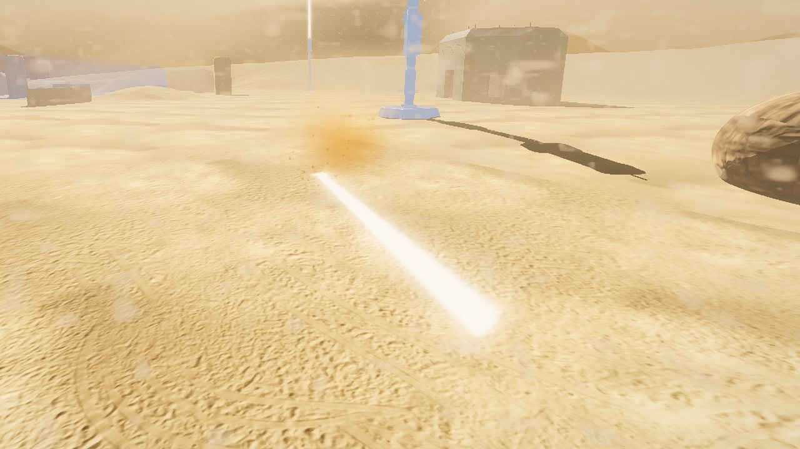
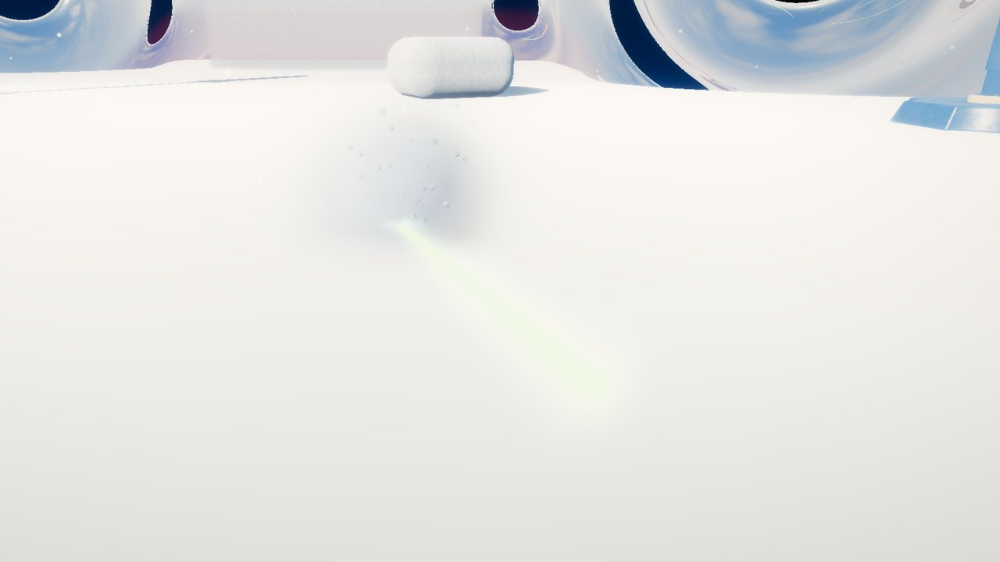
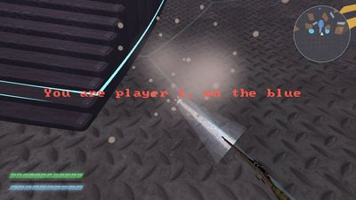
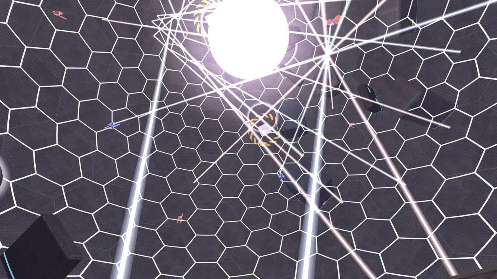
Players
Damage and respawn
- Any damage shows the hit effects: red and a blur come in from the screen's edges, and the screen shakes. They fade over 0.6 s (each player sets how red, 0.6; the shake, 6 px; the blur, 6 px).
- That includes damage from the world: Snow Planet's blizzard freezes you by 8% of your health a second.
- The health bar swells reddish-orange down from the last hit point.
- An eliminated player sees the view darken with YOU DIED and "Respawning in 3", counting down, and can't respawn early.
- After 3 s they come back on a ring around their team's spawn, never on top of another player, with full health and energy.
- The scoreboard counts each player's kills and deaths.
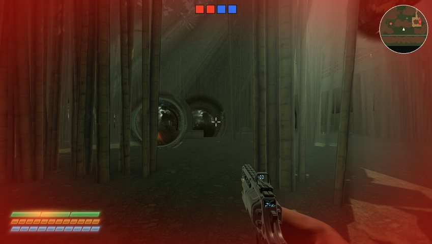
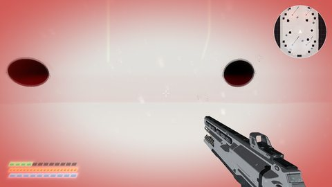
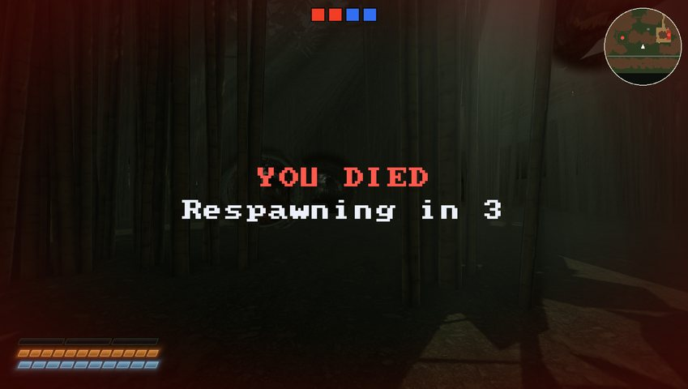
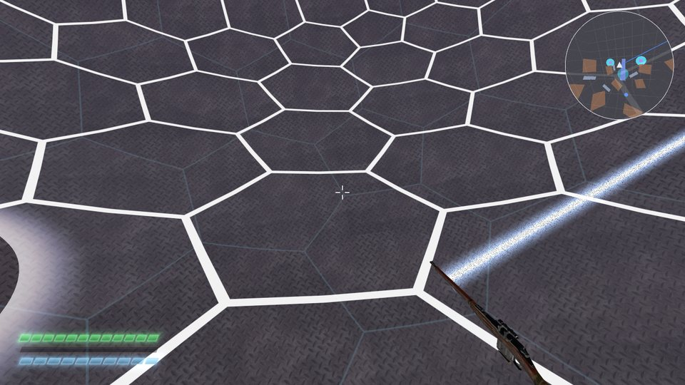
Differs: Dark Forest also regains health 5 s after a hit; the other levels don't.
Thrown wormholes
Two wormhole mouths of your own
- Q throws your purple mouth, the next press your green one. Once both are down, Q does nothing until the pair is gone.
- Flight: lobbed at 16 m/s, 0.3 rad above the crosshair, falling at 20 m/s². It drops to the floor below what it hits and hovers at eye height, facing back the way it flew. It fizzles after 4 s without landing, or too close to a wall or another warp.
- Linking: once both are down, anything or any laser that goes into one comes out of the other, bent like light. The view through a mouth is tinted its colour.
- Lone mouth: glows as a small ball until its partner lands.
- Shooting an enemy's pair: each hit makes both mouths flash red for 0.25 s; 2 sniper or 5 rifle shots destroy the pair. One shot destroys a lone ball. Your own and your teammates' mouths can't be hurt.
- Your mouths disappear when you die. On Lunar a mouth is 1.6 m in Schwarzschild radius and bends light 6 m around it.
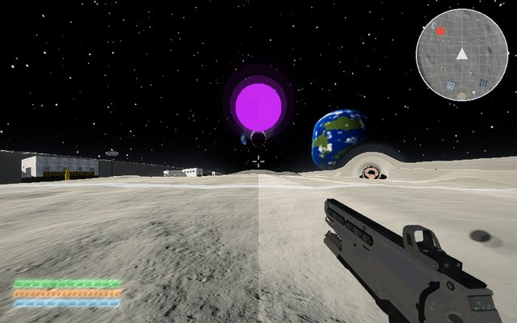
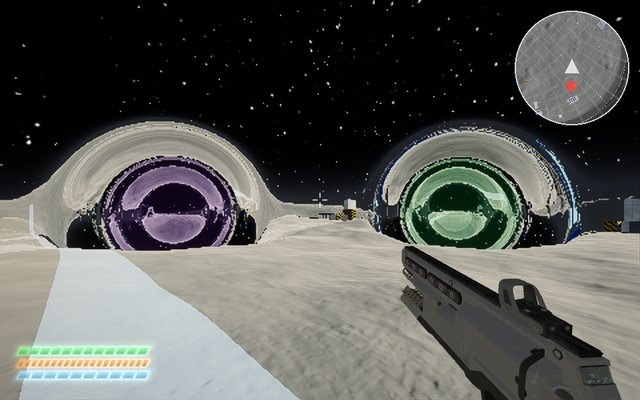
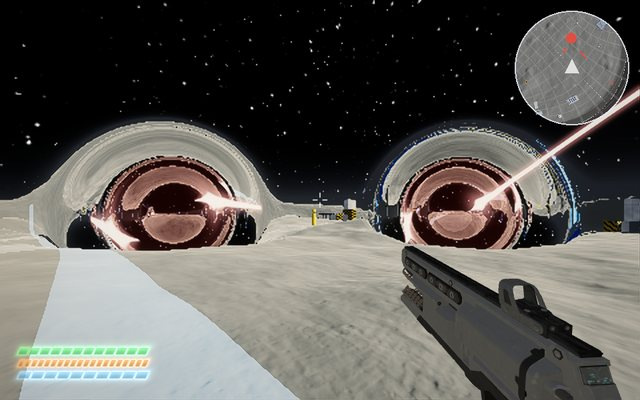
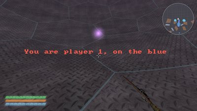
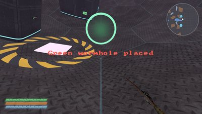
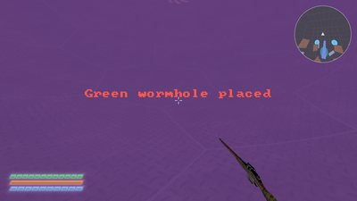
The Lunar pictures are from 2026-11-07, before the Milky Way was added to the sky; the mouths look the same today.
Differs: Dark Forest has no thrown wormholes yet. City Sphere's are portals without Lunar's lens.
Screens
What a player sees
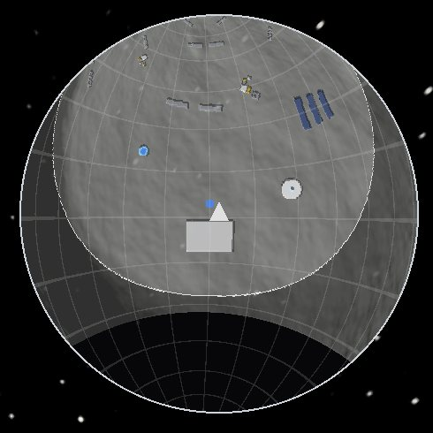
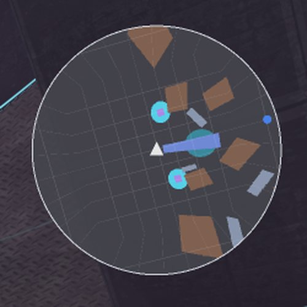
- Bars (bottom left): health, the gun's ammo and sprint energy, in glowing segments that lean like
/. Soft swells of light run along them as they change: reddish-orange down the health bar after a hit, pale blue down the energy bar while sprinting, fainter while it refills. - Minimap (top right, each player's choice): on Lunar, Dust and Snow Planet a Poincaré disk of the ground within 60 m, turned so you face up, where straight paths away from you bend into arcs; on City Sphere the sphere seen from its centre with straight grid lines every 5 m. Players and shots show in team colours.
- Console bar below the crosshair while E is held.
- Menu (Tab), pages turned with Q and E: SCORES first (each player's team, kills and deaths), SETTINGS (keys and your own numbers, saved for later games), MAP (the whole level from above, a photo-like picture with every player on it) and CREDITS. You stand still while it is open; the game goes on.
- Lobby:
CONNECTING, thenCONNECTEDwith each team's head count; 1 joins blue, 2 red, thenJOINING THE GAME. Up to 8 players. - Banners:
NO ANSWER FROM THE SERVER(nothing for 2 s),SERVER RUNS ANOTHER VERSION,THE GAME IS FULL. - Exit: Esc frees the mouse; Esc again asks "Do you want to exit?" (Return/Y exits, Esc/N stays).
Differs: Dark Forest's menu has the four pages, but its settings last one run, and it has no exit prompt yet.
Level · blue · depth 2
Dust
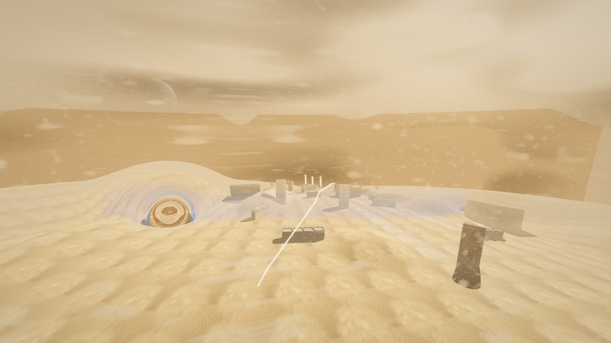
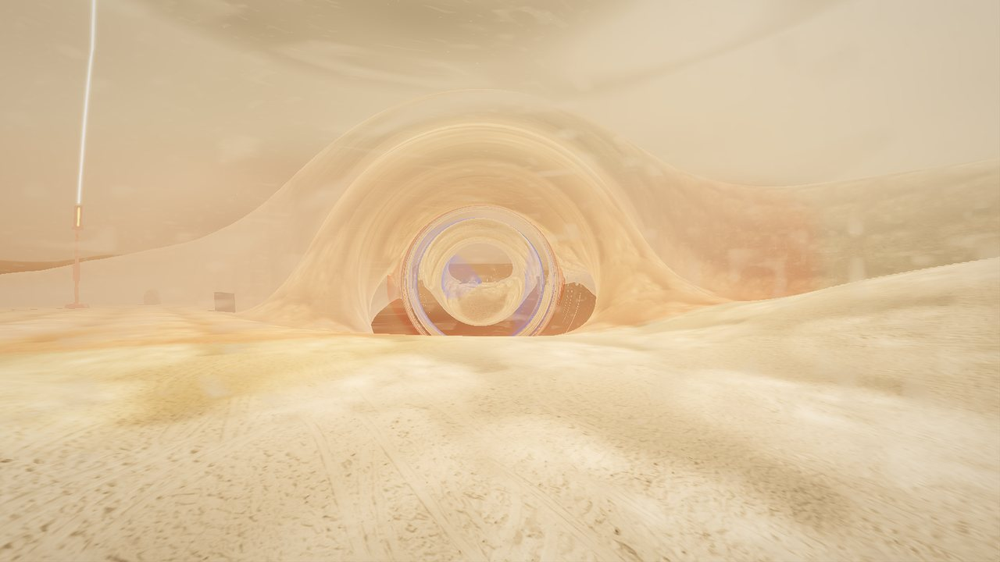
- Space: hyperbolic, curvature radius 50 m. A desert basin in a crater, the playable area an ellipse 256 m by 128 m; spawns 208 m apart.
- Sandstorm wind: it always blows one way, across the line between the spawns, and gusts ±20%. It bends light downwind, and the laser 2.4 times as much: fired across the wind, a shot lands about 3 m downwind at 50 m and 8 m at 80 m. The server decides hits on the same bent path.
- Look: fog that hides 94% at range, blowing sand sheets and streaks, a storm sky, sand puffs that drift downwind.
- Pieces: dunes, sandstone mesas, pillars, ruin walls and an arch, Hesco rows, bunkers; natural props jittered by a seed and mirrored between the teams.
- Warps: one fixed wormhole pair you walk and shoot through; no black hole.
- 3 pylons a team; golden-white lasers for everyone.
Level · blue · depth 1
Snow Planet
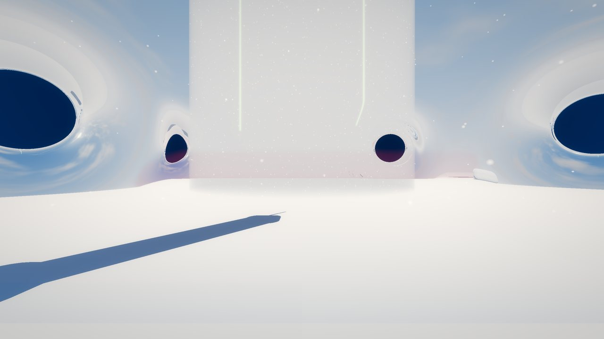
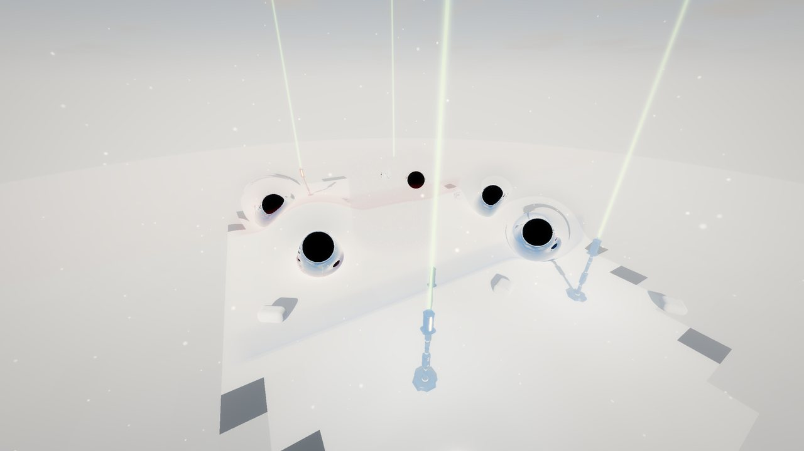
- Space: flat (a snowfield on a torus, 112 m by 72 m, played as a bounded ellipse 120 m by 80 m for now). The game runs it as nearly flat hyperbolic space (radius 160 m), so the same lensing works.
- The blizzard: exactly one cylinder, 10 m in radius and 16 m tall. Inside you walk at half speed and freeze, losing 8% of your health a second with Lunar's hit effects, and a laser goes only 8 m into it.
- Warps: five black holes (three to the north, two offset south) and one wormhole pair.
- Look: snow sky, ground and fog, falling snow, six rounded mounds, snow puffs where shots land.
- 2 pylons a team; green lasers for everyone.
Level · purple · depth 0
City Sphere
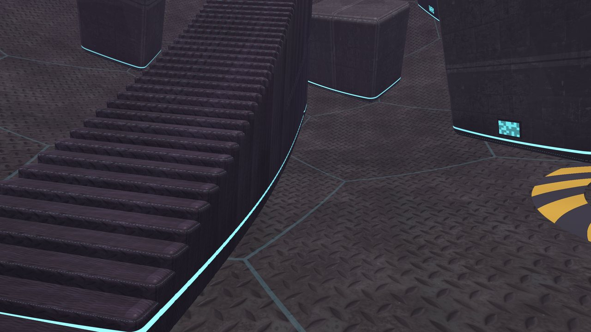
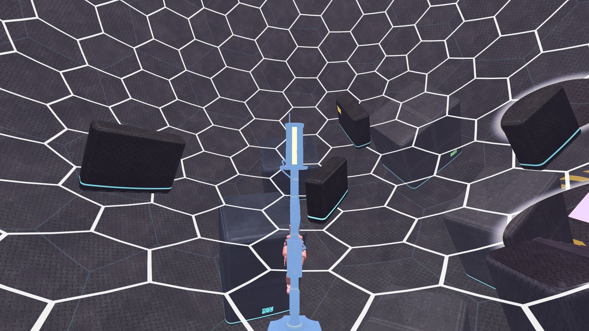
- Space: flat, inside a hollow sphere 48 m across. Gravity points outward, so you walk on the inside and look up at the core. Red's half is blue's turned through the centre (antipodes).
- Two floors: the street, and the glass level, a glass shell 34 m across that roofs it. Below the glass it plays like a normal close-quarters shooter, and shots stop at the glass.
- The glass level: nothing overhead, so you shoot straight across the sphere, and shots reflect off the glass up to 2 times, 90 m in all.
- Getting up: 48 steps of stairs in front of each team's spawn, and lifts: hold Space on a pad to rise at 6 m/s.
- 1 pylon a team, on the glass with no cover around it. Team blue and red lasers.
- No warps; thrown mouths are portals. Sprint is faster here: 21.6 m/s.
Level · red · depth 1
Dark Forest
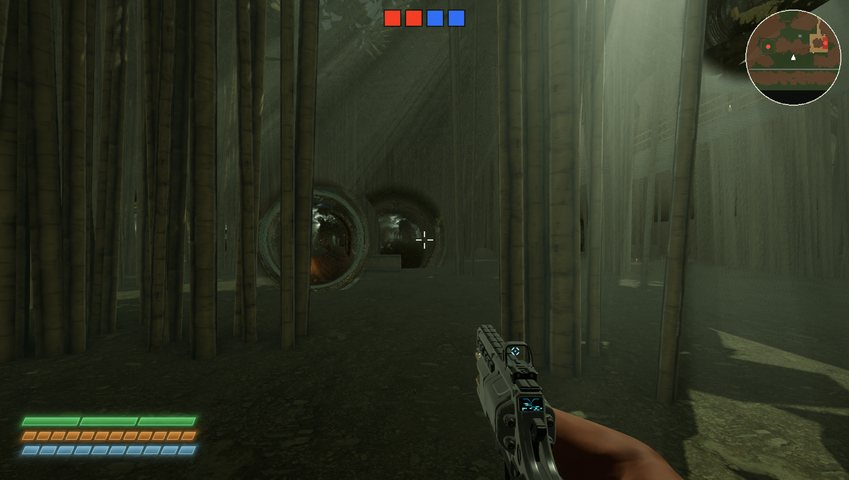
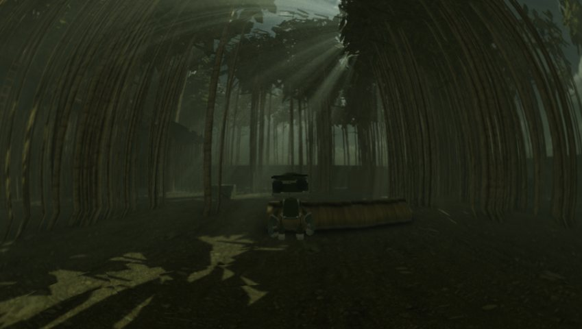
- Space: flat and bounded, 60 m by 112 m, fenced by rock walls. A seeded bamboo maze of 4 m cells, with dead ends and loops; blue's half is red's turned half a turn.
- Dark: a murky green sky, thick haze, and leaves whose shadows keep it dark, with light shafts through the gaps and 31 flickering candles.
- Up in the trees: treehouse decks at 7 m, bridges between them and a 12 m lookout, reached by ladders.
- Warps: 5 lensed wormhole pairs, three ground gates and a lift per team up to its deck; no black holes. Robots, players and lasers show through them.
- 2 pylons a team, one on the ground and one on the treehouse deck. Golden lasers.
Being aligned with Lunar: it has Lunar's HUD, hit effects and YOU DIED, but still its own gun, hold (3 s), hits and movement, and no thrown wormholes, V, flashlight or exit prompt.
Level · red · depth 2
Lunar Surface
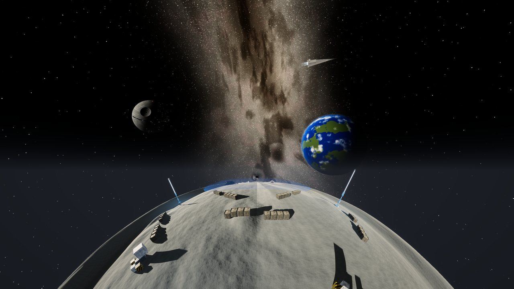
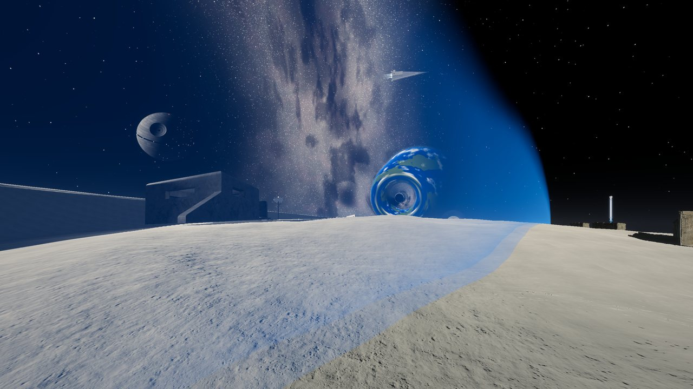
- Space: hyperbolic, curved 1.5× its map (radius 26.7 m). A lunar base in an elliptical crater, 256 m by 144 m; the crater wall is the soft map edge.
- Zones: faint see-through walls in the team's colour, 6 m high, 45 m either side of the middle; they stop nothing.
- Black hole about 17 m above the middle; falling in sends you to spawn. Each console turned off grows it over 4 s and widens its lens. Time runs slower near it (15× general relativity, never below 10%).
- One wormhole from a ridge to red's landing pad.
- Sky: sun, planet, stars, a photo-like Milky Way, a ring ship and delta fighters overhead, and far off a moon-sized battle station and a capital ship.
- Wormhole colour from motion: in a mouth's throat the view turns light cyan moving forward, dark red moving back.
- 3 pylons a team: bunkers, Hesco rows, habitats, a hangar. Team blue and red lasers.
Curved space
Light, lasers and players follow the curve
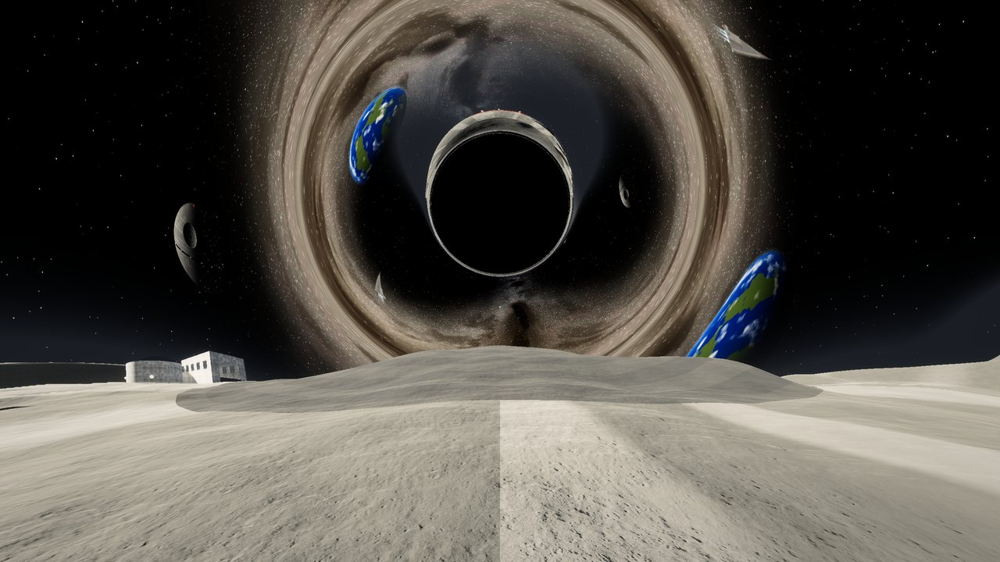
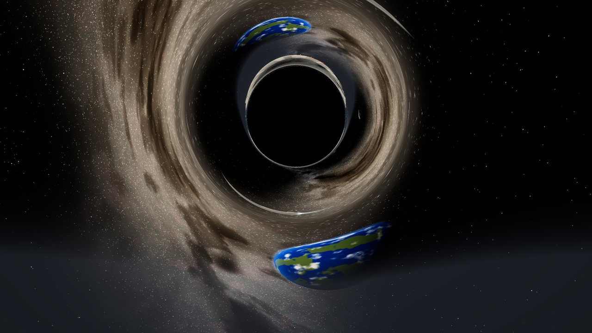
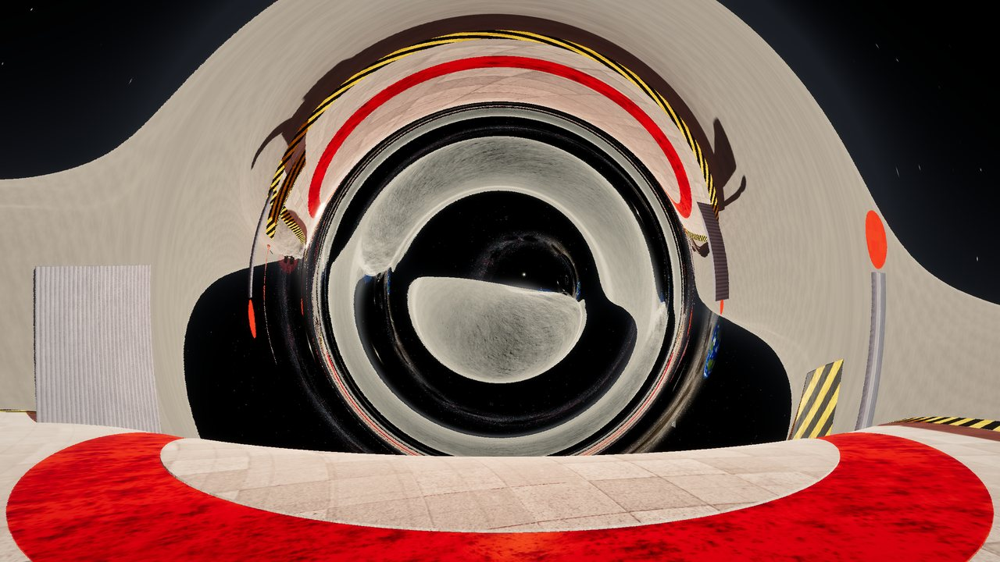
- Black holes bend light and lasers; close passes fall in.
- Wormholes carry light, lasers and players to the other mouth.
- Hyperbolic levels (Dust, Lunar): far things shrink fast and straight lines spread apart.
- Dust's wind bends light like a gradient in the air.
- Colour flash: moving through a throat, only you see it.
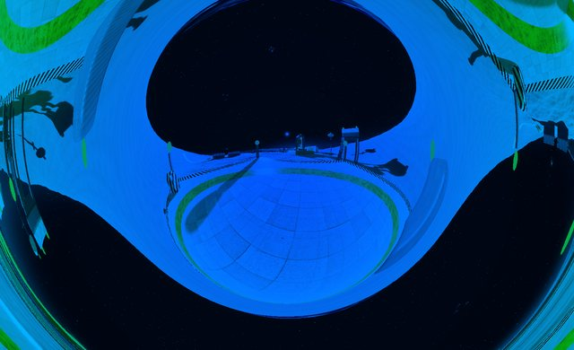
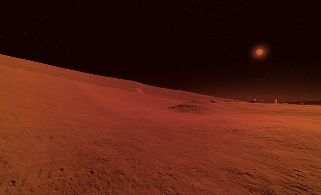
The colour pictures are from 2026-11-07, before the Milky Way; the effect is unchanged.
Status · 2026-11-08
In progress
Dark Forest, in line with Lunar
- Done: Lunar's HUD, hit effects, "YOU DIED" and sprint energy (#431); robots, players and lasers through the wormholes (#426).
- Still to do: both of Lunar's guns and its numbers (a 10 s hold within 3 m checked by the server, hits to eliminate, movement and jump), thrown wormholes, third person, the flashlight, the exit prompt and settings files. Work is under way on branches.
Looping worlds
- Snow Planet: walking, seeing and shooting across the torus's edges is built in a stacked PR (#423, #424, #430), not merged yet.
- Dark Forest: bounded for now, by its own decision D1; a looping forest isn't built yet. To confirm.
Match balance
- In bot matches the defender usually wins, so roles swap every round and the wavefronts barely move.
- Options awaiting the user's choice: a time limit per round that the attacker wins, fewer consoles on the defender's side, or a respawn delay for defenders.
Bugs found and noted, not fixed: W-127 to W-135 in the wishlist (demos/hyperbolic_wormholes_rust/USER_WISHLIST_CHECKLIST.md), for example City Sphere's stairs hole letting shots through (W-132) and the progression page calling a match-winning round "attacker advances" (W-133).